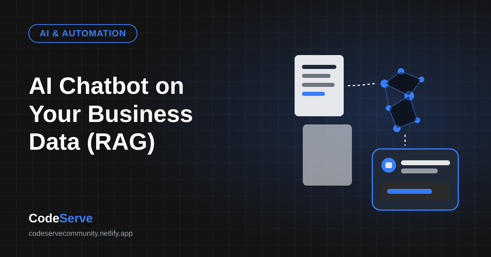
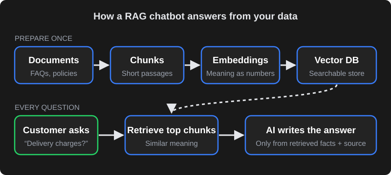

Why a normal AI chatbot isn't enough
Large language models (LLMs) are trained on public internet data up to a certain date. They write fluently, but they don't know your current price list, delivery areas, clinic timings or return policy. Ask them anyway and they may confidently make something up — a problem called hallucination.
"Training" a model on your data from scratch is expensive and unnecessary for most businesses. RAG (Retrieval-Augmented Generation) is the practical alternative: the chatbot searches your own knowledge base for relevant information and gives it to the AI along with the question, so the answer is grounded in your facts.
How RAG works, step by step

- Collect documents — FAQs, product catalogue, policies, brochures, website pages, past support answers.
- Split into chunks — each document is broken into short passages (for example, a few paragraphs each) so the system can find precise answers.
- Create embeddings — each chunk is converted into a list of numbers that represents its meaning. Passages about "delivery charges" end up close to questions about "shipping cost", even if the words differ.
- Store in a vector database — the embeddings are saved in a database built for "find the most similar meaning" searches.
- Retrieve for each question — when a customer asks something, their question is embedded too, and the most relevant chunks are fetched.
- Generate the answer — the AI receives the question plus those chunks with instructions such as "answer only from this information". It writes a natural reply and can cite the source document.
Because the knowledge lives outside the model, updating the chatbot is as simple as updating the documents — no retraining.
A quick example: a customer asks a clinic's chatbot, "Are you open on Sunday and do I need an appointment for a blood test?" The system retrieves the passages on clinic timings and lab tests, and the AI replies with the Sunday hours, says walk-ins are accepted for blood tests, and offers to book a slot. The same model with no retrieval might guess — and guess wrong.
What data to prepare
The quality of answers depends more on your content than on the AI model. Before building, collect and clean:
| Content | Why it matters | Tips |
|---|---|---|
| FAQs and policies | Most customer questions are repeats. | Write one clear answer per question; remove outdated versions. |
| Products/services and prices | The most asked and most sensitive information. | Keep one source of truth (a sheet or database) the bot reads from. |
| Locations, timings, contact | Simple facts customers need instantly. | Include holidays and exceptions. |
| Past chat or email answers | Shows how your team actually explains things. | Remove personal data before using. |
| Things the bot must NOT do | Sets boundaries. | E.g. no medical diagnosis, no discounts, no legal advice. |
Stopping wrong answers (guardrails)
- Strict instructions: tell the model to answer only from the retrieved information and to say "I'm not sure — let me connect you to our team" when the answer isn't there.
- Good retrieval: tune chunk size, add metadata (product, branch, language) and fetch enough context. Many "AI mistakes" are really retrieval mistakes.
- Live data for live facts: prices, stock and order status should come from your system via an API call, not from a document that may be stale.
- Show sources for internal assistants so staff can verify answers.
- Test with real questions — including tricky, rude and off-topic ones — and review conversations weekly in the first month.
No AI system is perfect. Guardrails reduce errors significantly, but sensitive decisions — refunds, medical or legal questions — should always go to a human.
Human handover and lead capture
The best business chatbots know when to step aside. Design clear handover rules: when the customer asks for a person, when the bot isn't confident, when the topic is a complaint, or when a high-value lead appears. The bot should collect name, phone and the question, then notify your team on WhatsApp, email or your CRM so nobody has to ask the customer to repeat themselves.
Website, WhatsApp and internal use
- Website chat — answers visitors 24/7 and captures leads that would otherwise leave.
- WhatsApp — where most Indian customers prefer to chat. Uses the official WhatsApp Business Platform; the AI handles replies within the customer service window and hands over when needed. Replies can be in English, Hindi, Telugu and other languages the model supports well.
- Internal knowledge assistant — staff ask questions about SOPs, HR policies or product specs and get answers with links to the source document.
Privacy and data security
- Only add documents the chatbot is allowed to share with the people who will use it. An internal HR policy should not be in a public website bot.
- Use AI providers and settings where your business data is not used to train public models, and review their data retention terms.
- Mask or avoid collecting sensitive personal data in chats where possible, and keep chat logs access-controlled.
- Follow applicable Indian law, including the Digital Personal Data Protection Act, 2023 — take legal advice for regulated sectors such as healthcare and finance.
What drives the cost
| Cost driver | What it depends on |
|---|---|
| Setup and development | Number of sources, integrations (CRM, store, WhatsApp), languages and custom flows. |
| AI model usage | Billed by the provider per amount of text processed; depends on model choice and conversation volume. |
| Vector database and hosting | Amount of content and traffic; small knowledge bases are inexpensive to host. |
| WhatsApp messaging | Meta's charges for template messages — check Meta's current rate card. |
| Maintenance | Updating content, reviewing conversations and improving answers over time. |
For reference, CodeServe's AI Website Chatbot starts at ₹15,000 and the AI WhatsApp Assistant at ₹24,999 one-time setup, with AI usage and Meta charges billed separately based on volume.
Build vs buy
- Off-the-shelf chatbot tools: quick to launch and fine for simple FAQ bots. Limits appear when you need deep integrations, custom logic, data control or Indian-language nuance.
- Custom RAG build: more control over data sources, retrieval quality, handover rules, integrations and costs. Better for businesses where the chatbot is a real part of sales or support.
A practical path: start with a focused custom bot on your top questions, measure how many conversations it resolves and how many leads it captures, then expand.
How to measure if it's working
Decide what success looks like before launch, so you judge the chatbot on results rather than impressions. Useful measures:
| Measure | What it tells you |
|---|---|
| Resolution rate | Share of conversations answered without a human. Rising over time means your knowledge base is improving. |
| Handover rate and reasons | Why people asked for a human — missing information, complex cases or complaints. Each reason points to a fix. |
| Leads captured | Names and numbers collected outside office hours that would otherwise have been lost. |
| Wrong or "not sure" answers | Questions the bot couldn't answer well. Add or rewrite content for the most common ones. |
| Customer feedback | A simple thumbs-up/down after an answer gives quick signal on quality. |
| Staff time saved | Fewer repeat questions on phone and WhatsApp for your team. |
A simple launch plan
- Week 1 — Collect and clean. Gather the top questions, current prices, policies and timings. Remove duplicates and outdated documents, and decide what the bot must never answer.
- Week 2 — Build and test internally. Set up retrieval, write the bot's instructions and handover rules, connect lead capture, and let your own team try to break it with real and tricky questions.
- Week 3 — Soft launch. Turn it on for one channel (often the website first), review every conversation daily and fix gaps in the content.
- Week 4 onwards — Expand. Add WhatsApp, more languages or live data from your systems once answers are consistently good. Keep a monthly review on the calendar.
The businesses that get the most from AI chatbots treat them like a new team member: give them clear information, check their work early on, and keep teaching them as your products and policies change.
Frequently asked questions
Do I need to train my own AI model to have a chatbot that knows my business?
Usually not. RAG lets an existing AI model look up answers in your own documents at the moment a question is asked, which is faster and cheaper than training a model and easier to keep up to date.
Can an AI chatbot give wrong answers?
Yes, any AI system can make mistakes. Good retrieval, strict instructions to answer only from your information, live data for prices and stock, and clear human handover rules greatly reduce the risk.
Can the chatbot reply in Hindi or Telugu?
Modern AI models handle many Indian languages, including Hindi and Telugu. Quality varies by language and model, so test with real customer questions in each language before launch.
Is my business data safe with an AI chatbot?
It can be, if the system is designed carefully: share only approved documents, choose providers whose terms don't use your data to train public models, control access to chat logs and follow Indian data-protection law.
How long does it take to launch a RAG chatbot?
A focused chatbot built on a clean set of FAQs and policies can often launch in one to three weeks. Integrations with your CRM, store or WhatsApp, and multiple languages, add time.